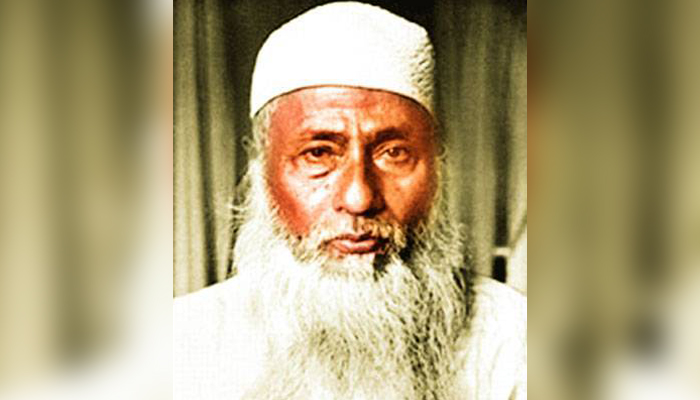
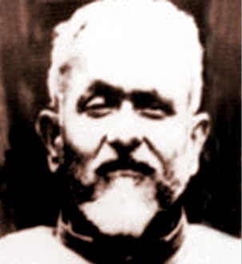
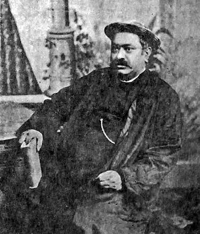
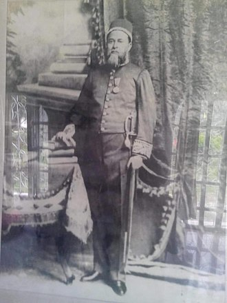
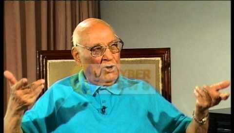
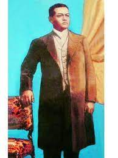
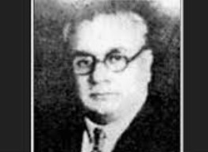
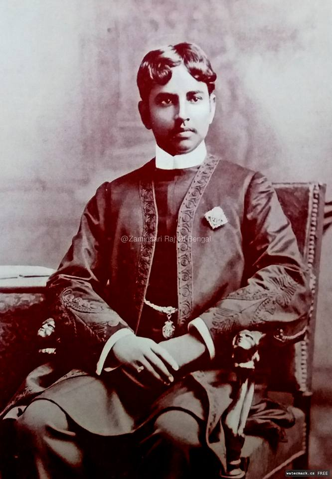
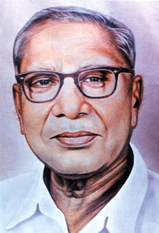
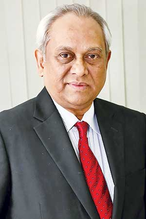

টাঙ্গাইল জেলা
টাঙ্গাইল জেলা
প্রখ্যাত ব্যক্তিত্ব :
মওলানা আবদুল হামিদ খান ভাসানী :
ভারতীয় উপমহাদেশের বুভুক্ষু মানুষের মজলুম নেতা। যেখানে অন্যায়-অবিচার সেখানেই একটি প্রতিবাদী কণ্ঠ, একটি ভূকম্পিত হুঙ্কারের নাম মওলানা ভাসানী। ১৮৮০ সালের ১২ ডিসেম্বর পূর্ববঙ্গের প্রবেশপথ খ্যাত সিরাজগঞ্জ জেলার সয়াধানগড়া গ্রামে এক বনেদি মুসলিম পরিবারে মওলানা ভাসানী জন্মগ্রহণ করেন। মওলানা ভাসানীর পিতার নাম হাজী শরাফত আলী খান। সিরাজগঞ্জ জন্মগ্রহণ করলেও টাঙ্গাইলে বিবাহ করে জীবনের অধিকাংশ সময় স্থায়ীভাবে বসবাস করেছেন বলে ভাসানী টাঙ্গাইলের অধিবাসী হিসেবে বেশি পরিচিত। জীবনের প্রথমার্ধে তিনি ব্রিটিশ বিরোধী নেতা মওলানা মোহাম্মদ আলী, মওলানা শওকত আলী, মওলানা আবুল কালাম আজাদ দ্বারা অনুপ্রাণিত হয়ে ব্রিটিশ বিরোধী আন্দোলনে নিজেকে সম্পৃক্ত করেন। ১৯২৬-এ আসামে প্রথম কৃষক-প্রজা আন্দোলনের সূত্রপাত ঘটান। ১৯২৯-এ আসামের ধুবড়ী জেলার ব্রহ্মপুত্র নদের ভাসান চরে প্রথম কৃষক সম্মেলন অনুষ্ঠান। এখান থেকে নামের শেষে ভাসানী শব্দ যুক্ত। ১৯৩১-এ সন্তোষের কাগমারীতে, ১৯৩২-এ সিরাজগঞ্জের কাওরাখোলায় ও ১৯৩৩-এ গাইবান্ধায় বিশাল কৃষক সম্মেলন অনুষ্ঠান। ১৯৩৭-এ কংগ্রেস ত্যাগ করে মুসলিম লীগে যোগদান। একই বছর আসামে বাঙালি নিপীড়নের হাতিয়ার হিসেবে ‘লাইনপ্রথা’চালু হলে এই প্রথা-বিরোধী আন্দোলনের নেতৃত্ব দেন। ১৯৪০-এ শেরে বাংলা এ.কে. ফজলুল হকের সঙ্গে মুসলিম লীগের সভাপতি নির্বাচিত ও পাকিস্তান আন্দোলনে অংশগ্রহণ। তিনি ১৯৪৪ আসাম প্রাদেশিক মুসলিম লীগের সভাপতি ছিলেন। এ সময় দল ও দলের বাইরে বাঙালি কৃষকদের অধিকার আদায়ে দুর্বার আন্দলন গড়ে তোলেন। ভাসানী ১৯৪৯ সালে পাকিস্তানে প্রথম বিরোধীদল ‘আওয়ামী মুসলিম লীগ’গঠন করে এর সভাপতির দায়িত্ব গ্রহণ করেন। ১৯৫২ সালের ভাষা আন্দোলনে তার সাহসী ভূমিকা উজ্জ্বল হয়ে আছে। ১৯৫২-র ৩০ জানুয়ারি ঢাকা জেলা বার লাইব্রেরি হলে তাঁর সভাপতিত্বে অনুষ্ঠিত এক সভায় সর্বদলীয় রাষ্ট্রভাষা কর্মপরিষদ গঠিত এবং এর অন্যতম প্রধান সদস্য নিযুক্ত। রাষ্ট্রভাষা আন্দোলন (ফেব্রুয়ারি ১৯৫২)-এ সহযোগিতার জন্য গ্রেফতার। ১৬ মাস কারানির্যাতন ভোগ। পূর্ববঙ্গ পরিষদের নির্বাচনে ক্ষমতাসীন মুসলিম লীগকে মোকাবেলা করার লক্ষ্যে ১৯৫৩-সালের ৩ ডিসেম্বর কৃষক-শ্রমিক পার্টির সভাপতি শেরে বাংলা এ.কে. ফজলুল হক ও তাঁর দল নিখিল পাকিস্তান আওয়ামী মুসলিম লীগের আহবায়ক হোসেন শহীদ সোহরাওয়ার্দীর সাথে যুক্তফ্রন্ট গঠন। নির্বাচন (৮-১১ মার্চ ১৯৫৪)- যুক্তফ্রন্টের বিপুল বিজয় অর্জন। যুক্তফ্রন্ট পার্লামেন্টারি পার্টির নেতা এ.কে. ফজলুল হক কর্তৃক পূর্ববঙ্গে সরকার গঠন (৪ এপ্রিল ১৯৫৪)। ভাসানী পূর্ব বাংলার খাদ্যজনিত দুর্ভিক্ষ রোধকল্পে কেন্দ্রীয় সরকারের নিকট থেকে ৫০ কোটি টাকা আদায়ের দাবিতে ১৯৫৬-র ৭ মে ঢাকায় অনশন ধর্মঘট শুরু করেন। সরকার দাবি মেনে নিলে ২৪ মে ১৯৫৬ অনশন ভঙ্গ করেন। এই বছর ১২ সেপ্টেম্বর হোসন শহীদ সোহরাওয়ার্দীর নেতৃত্বে কেন্দ্রে আওয়ামী লীগ রিপাবলিকান পার্টির কোয়ালিশন সরকার গঠিত হলে মওলানা ভাসানী কর্তৃক সরকারের মার্কিন ঘেঁষা পররাষ্ট্র নীতির বিরোধিতা। নিরপেক্ষ পররাষ্ট্র নীতি অনুসরণ ও পূর্ববাংলার স্বায়ত্তশাসন প্রদানের জন্য তৎকর্তৃক সরকারের উপর চাপ প্রয়োগ। মূলত এ থেকেই সোহরাওয়ার্দী-পন্থীদের সঙ্গে ভাসানীর মতবিভেদ তৈরি হয়।
পাকিস্তানের ইতিহাসের সবচেয়ে বড় রাজনৈতিক ও সামাজিক সম্মেলন তিনিই ডাকেন ১৯৫৭ সালে টাঙ্গাইলের কাগমারীতে। যা কাগমারী সম্মেলন নামে ইতিহাসখ্যাত। এই সম্মেলনে তিনি পশ্চিমা শাসকগোষ্ঠীকে ‘আস্সালামু আলাইকুম’বলে বিদায় জানিয়েছিলোন। কাগমারী সম্মেলনের মধ্যে সোহরাওয়ার্দী ও শেখ মুজিব-এর সাথে তার বিচ্ছেদ সৃষ্টি হয়েছিল। ভাসানী পাক-মার্কিন সামরিক চুক্তি বাতিলের দাবি জানান। প্রধানমন্ত্রী শহীদ সোহরাওয়ার্দী সেই দাবি প্রত্যাখ্যান করলে ১৮ মার্চ ১৯৫৭ আওয়ামী লীগ থেকে ভাসানী পদত্যাগ করেন। একই বছর ২৫ জুলাই ১৯৫৭ তাঁর নেতৃত্বে ঢাকার রূপমহলো সিনেমা হলে ন্যাশনাল আওয়ামী পার্টি (ন্যাপ) গঠিত হয়। তিনি সভাপতি নির্বাচিত হন। ১৯৬৬-তে শেখ মুজিবুর রহমান কর্তৃক উপস্থাপিত ৬-দফা কর্মসূচির বিরোধিতা করে রাজনৈতিক প্রক্রিয়া পরিচালনা করেন ভাসানী। ১৯৬৭ নভেম্বরে ন্যাপ দ্বি-খন্ডিত হলে চীনপন্থী ন্যাপের নেতৃত্ব গ্রহণ। ১৯৬৯-এর জানুয়ারি-মার্চের আইয়ুববিরোধী গণ-আন্দোলনে বলিষ্ঠ ভূমিকা পালন। ছাত্র সংগ্রাম পরিষদের ১১-দফা কর্মসূচির প্রতি সমর্থন জ্ঞাপন। আইয়ুব খানের পতনের পর ইয়াহিয়া খান নির্বাচনের ঘোষণা দিলে ভাসানী দাবি তোলেন ‘ভোটের আগে ভাত চাই’, দেশে ‘ইসলামিক সাংস্কৃতিক বিপ্লব’সংঘটন, ‘ইসলামিক সমাজতন্ত্র’কায়েম ইত্যাদি দাবি উপস্থাপন। নির্বাচনের কিছুদিন পূর্বে ১২ নভেম্বর ১৯৭০ পূর্ব পাকিস্তানের উপকূল অঞ্চলে এক প্রলয়ঙ্করী ঘূর্ণিঝড় হলে দুর্গত এলাকায় ত্রাণ কাজকে অগ্রাধিকার দিয়ে এবং পশ্চিমা সরকার ঘূর্ণিদুর্গতদের জন্য কোনো ব্যবস্থা না-নিলে নির্বাচন থেকে সরে দাঁড়ান। ৪ ডিসেম্বর ১৯৭০ ঢাকার পল্টন ময়দানে এক জনসভায় সভাপতির ভাষণ দানকালে ‘স্বাধীন পূর্ব পাকিস্তান’দাবি উত্থাপন। স্বাধীনতা যুদ্ধের প্রস্ত্ততি পর্বে ভাসানী শেখ মুজিবুর রহমানের পরিচালিত অসহযোগ আন্দোলন (৩-২৫ মার্চ ১৯৭১)-এর প্রতি সমর্থন প্রদান করেন।
১৯৭১ সালের স্বাধীনতা যুদ্ধে তিনি প্রবাসী বাংলাদেশ সরকারের প্রধান উপদেষ্টা হিসেবে দায়িত্ব পালন করেন। ১৯৭২-এর ২ জানুয়ারি ভারত থেকে বাংলাদেশে প্রত্যাবর্তন। একই বছর ২৫ ফেব্রুয়ারি ‘হক কথা’প্রকাশ। ১৯৭২ সালে বঙ্গবন্ধু শেখ মুজিব ও ইন্দিরা গান্ধির মধ্যে যে মৈত্রী চুক্তি স্বাক্ষরিত হয় ভাসানী তার বিরোধিতা করেন। তবে তিনি ১৯৭২-এর সংবিধান ও ব্যাংকবীমা ও শিল্পপ্রতিষ্ঠান সরকারের জাতীয়করণ নীতির প্রতি সমর্থন দেন। স্বাধীনতার পরবর্তীকালে পদ্মা নদীর পানি প্রবাহ বন্ধ করে গঙ্গা নদীতে নির্মিত মরণ বাঁধ ফারাক্কা তুলে দেওয়ার দাবিতে ১৯৭৬ সালে ১৬ মে ইন্দিরা গান্ধি সরকারের উপর চাপ সৃষ্টি করার জন্য ফারাক্কা মিছিল নিয়ে কানসার্ট সীমান্ত পর্যন্ত অগ্রসর হয়েছিলেন। ১৯৭৬ সালের ১ অক্টোবর তার নেতৃত্বে ‘খোদাই খিদমতগার’সংগঠন গঠিত।
সামন্তবাদ, সাম্রাজ্যবাদ ও পুঁজিবাদ-বিরোধী আন্দোলনের তিনি ছিলেন লড়াকু নেতা। দেশের সমাজতান্ত্রিক, অর্থনৈতিক ব্যবস্থা কায়েম ও বাঙালি জাতিসত্তা বিকাশের আন্দোলনে তিনি ছিলেন কিংবদন্তি তুল্য। তাকে বলা হয়ে থাকে ‘অ্যাফ্রো-এশিয়ার নির্যাতিত মানুষের মুকুটহীন সম্রাট। ভাসানীর প্রকাশিত গ্রন্থ, দেশের সমস্যা সমাধান (১৯৬২), মাও সেতুং-এর দেশে (১৯৭৬)।
মজলুম জননেতা মওলানা ভাসানী ১৯৭৬ সালের ১৭ নভেম্বর মৃত্যুরবণ করেন।
প্রিন্সিপাল ইবরাহীম খাঁ :
প্রিন্সিপাল ইবরাহীম খাঁ’র জন্ম ১৮৯৪ সালে, ভুঁঞাপুর উপজেলার বিরামদী (বর্তমানে শাবাজনগর) গ্রামে। পিতার নাম শাবাজ খাঁ, মা রতন খানম। ১৯১৯ সালে কলিকাতা বিশ্ববিদ্যালয় থেকে ইংরেজি ভাষা ও সাহিত্যে এমএ পাস করেন। ১৯২৩ সালে আইনে বিএল ডিগ্রি নিয়ে দেশে ফিরে আসেন। আইন পাস করলেও ওকালতি পেশায় না-গিয়ে তিনি করটিয়া হাফেজ মাহ্মুদ ইনস্টিটিউশনের প্রধান শিক্ষক হিসেবে কাজে যোগদান করেন।
করটিয়ার জমিদার ওয়াজেদ আলী খান পন্নী একটি কলেজ প্রতিষ্ঠার ইচ্ছা প্রকাশ করলে প্রিন্সিপাল সাহেব সর্বতোভাবে সহযোগিতা প্রদানে এগিয়ে এলেন। ১৯২৬ সালে প্রতিষ্ঠিত হলো করটিয়া সা’দত কলেজ। প্রতিষ্ঠালগ্ন থেকেই প্রিন্সিপালের দায়িত্ব পেলেন ইবরাহীম খাঁ। তিনি এক টানা ২২ বছর অতি সুনামের সঙ্গে এ গুরুদায়িত্ব পালন করেন।
অবিভক্ত বাংলা ও আসামে সা’দত কলেজই মুসলমান প্রতিষ্ঠিত প্রথম কলেজ এবং ইবরাহীম খাঁ-ই প্রথম মুসলমান প্রিন্সিপাল। করটিয়ায় একটি সাহিত্য পরিমন্ডল গড়ে ওঠে করটিয়া সা’দত কলেজকে কেন্দ্র করে। এর মধ্যমণি ছিলেন ইবরাহীম খাঁ। এখানে পড়াতে এবং পড়তে এসে যাঁরা সাহিত্যচর্চা করেছেন তাঁদের মধ্যে অনেকেই বাংলা-সাহিত্যে পরিচিত। এঁদের মধ্যে রয়েছেন অধ্যাপক কাজী আকরম হোসেন, অধ্যাপক গোলাম মকুসদ হিলালী, অধ্যাপক আজিমুদ্দিন, মওলানা আহ্সানুল্লাহ, আবুল হাশেম, আবদুল কাদের, নূরুন্নাহার, তালিম হোসেন, অধ্যাপক মুফাখ্খারুল ইসলাম, আশরাফ সিদ্দিকী, খোন্দকার আবুবকর, পিসি সরকার, ইদরিস আলী, রবিঘোষ ঠাকুরতা, খুরশীদ আহমদ, আলীম-আল রাজী, শামসুজ্জামান, মোকসেদ আলী, এএসএম আবদুল জলিল প্রমুখ। ছোট ছোট ছেলেমেয়েদের মধ্যে যাতে সাহিত্য-পিপাসা সৃষ্টি করা যায়, তার জন্য ইবরাহীম খাঁ ‘কাকলি কুঞ্জ’(১৯৪৩) এবং বড়দের সাহিত্যচর্চার কেন্দ্রস্বরূপ মহুয়া মজলিশ’(১৯৪২) প্রতিষ্ঠা করেন। প্রিন্সিপাল ইবরাহীম খাঁ ১৯৪৮ সালে ঢাকায় টাঙ্গাইল মাহফিল (বর্তমান টাঙ্গাইল জেলা সমিতি) প্রতিষ্ঠা করেন।
১৯৪৮ সাল থেকে ১৯৫৩ সাল পর্যন্ত তিনি পূর্ব পাকিস্তান মাধ্যমিক শিক্ষা বোর্ডের প্রেসিডেন্ট ছিলেন। সরকারি দায়িত্ব পালনের পাশাপাশি ১৯৪৮ সালে ভূঞাপুর কলেজ(অধুনা ইবরাহীম খাঁ কলেজ) স্থাপন করেন। ঢাকার মীরপুরস্থ সরকারি বাংলা কলেজটি ডক্টর মুহম্মদ শহীদুল্লাহ, প্রিন্সিপাল আবুল কাসেম এবং তাঁর সম্মিলিত প্রচেষ্টার ফসল। ১৯৪৬ সালে প্রাদেশিক শিক্ষক সমিতির সভাপতি এবং একই সালে বাংলার প্রাদেশিক আইনসভার সদস্য নির্বাচিত হন। তিনি ১৯৫৭ তে আওয়ামী লীগে যোগদান করেন। ১৯৬২ সালে পাকিস্তান জাতীয় পরিষদের সদস্য (ময়মনসিংহ-২) নির্বাচিত হন। অতঃপর ক্ষমতাসীন কনভেনশন মুসলিম লীগে যোগদান। ১৯৭০-এর ৭ ডিসেম্বরের জাতীয় পরিষদের নির্বাচনে মুসলিম লীগের (কাইয়ুমপন্থি) মনোনয়নে টাঙ্গাইল জেলা থেকে প্রতিদ্বন্দ্বিতা করে পরাজিতহন। ঢাকা ও কলিকাতা বিশ্ববিদ্যালয়ের সিনেটর, পাকিস্তান কৃষি ব্যাংক ও বাংলা একাডেমীরও কার্যকরী সদস্য ছিলেন। তিনি ব্রিটিশ আমলে খান সাহেব ও খান বাহাদুর এবং পাকিস্তান আমলে সিতারা-ই-ইমতিয়াজ উপাধি লাভ করেন। ১৯৬৩-তে নাটকে বাংলা একাডেমী পুরস্কার এবং ১৯৭৬-এ একুশের পদক লাভ করেন।
গ্রাম বাংলার সরলপ্রাণ মানুষের ভাষায় লেখা তাঁর ছোটগল্প, নাটক, রসরচনা স্বাতন্ত্র্যের দাবি রাখে। তিনি অনেক পাঠ্যগ্রন্থের প্রণেতা। তাঁর রচিত গ্রন্থের মধ্যে নাটক : কাফেলা, কামালপাশা, আনোয়ার পাশা, রস রচনা : আলু বোখারা, উস্তাদ, মানুষ, শিশুসাহিত্য : ব্যাঘ্র মামা, সোহরাব রোস্তম, শাহনামা। ভ্রমণকাহিনী : ইস্তাম্বুল যাত্রীর পত্র, নয়াচীনে এক চক্কর। অনুবাদ : আরব জাতি, নুরমহল, চেঙ্গিস খাঁ, বাবুর নামা উল্লেখযোগ্য। ইবরাহীম খাঁ ১৯৬৩ সালে বাংলা একাডেমী পুরস্কার পান। ১৯৭৮ সালের ২৯ মার্চ তিনি পরলোকগমন করেন।
হেমচন্দ্র :
ইতিহাসের পাতায় গোপালপুর উপজেলার হেমনগর রাজবাড়ি উল্লেখযোগ্য। হেমনগর রাজবাড়ির রাজা ছিলেন রাজা হেমচন্দ্র। বিখ্যাত আম্বাবীয়ার জমিদার বংশের কালীচন্দ্র চৌধুরীর পুত্র হেমচন্দ্র চৌধুরী। জন্ম ১৮৩৩ সালে। তার নামেই এলাকাটির নাম হয়েছে হেমনগর। তিনি পুখুরিয়া পরগণার একআনি অংশের জমিদার ছিলেন।
হেমবাবু প্রজাকল্যাণে রাস্তাঘাট, পুকুর ইত্যাদি নির্মাণ করেন। পারিবারিকমন্ডলে হেমনগর হিতৈষী নামে পত্রিকা প্রকাশ করেন। তাঁর বাড়িতেই বর্তমানে হেমনগর কলেজ স্থাপিত। তিনি শিক্ষা প্রসারের জন্য হেমনগরে তাঁর মায়ের নামে শাশীমুখী উচ্চ ইংরেজি বিদ্যালয় স্থাপন করেন। এছাড়া তিনি গোপালপুর উচ্চ বিদ্যালয়ে গৃহ নির্মাণ কল্পে জমিদানসহ পিংনা ইংরেজি উচ্চ বিদ্যালয় ও ঢাকা মেডিকেল স্কুল, গোপালপুর বালিকা বিদ্যালয় এবং বরিশাল মুক ও বধির বিদ্যালয়ে উল্লেখযোগ্য পরিমাণ অর্থ দান করেছিলেন। প্রজাদের স্বাস্থ্যসেবার কথা বিবেচনা করে হেমনগরে স্থাপন করেন হরদূর্গা দাতব্য চিকিৎসালয়। ম্যালেরিয়ার স্বর্গরাজ্য বলে কথিত এ অঞ্চলে বিংশ শতকের প্রথমার্ধে হেমবাবু
ডাকঘর মারফত মাসিক ১৫ পাউন্ড কুননিল ঔষধ বিতরণ করতো। এছাড়া পিংনা দাতব্য চিকিৎসালয়, ময়মনসিংহ ভিক্টোরিয়া হাসপাতাল নির্মাণে, ময়মনসিংহ পুরাতন হাসপাতালের সৌধ নির্মাণে অনেক অর্থ দান করেছেন। তৎকালে দুর্গম চট্টগ্রামের চন্দ্রনাথ পাহাড়ে তীর্থযাত্রীদের জন্য লোহার সেতু স্থাপনের জন্য সিংহভাগ অর্থ তিনিই প্রদান করেছেন। কবি ও গীতিকার হিসেবে হেমবাবুর তৎকালে সুনাম ছিলো। তাঁর কয়েকটি কবিতার বইও প্রকাশিত হয়েছিলো। হেমচন্দ্র চৌধুরীর বাড়িতে নাট্যশালাও ছিলো। তবে হেমবাবুর প্রজানিপীড়নের চিত্র পাওয়া যায়। ১৯১৫ সালে মৃত্যুবরণ করেন।
নবাব বাহাদুর সৈয়দ নওয়াব আলী চৌধুরী :
টাঙ্গাইলের ঐতিহাসিক ব্যক্তিত্বের অন্যতম হলেন ধনবাড়ির নবাব বাহাদুর সৈয়দ নওয়াব আলী চৌধুরী। ১৮৬৩ সালে ২৯ ডিসেম্বর ধনবাড়ি জমিদার পরিবারে তার জন্ম। পিতার নাম জনাব আলী চৌধুরী ও মাতার নাম সাইয়েদা রাবেয়া খাতুন। নওয়াব আলী চৌধুরী ১৯০৬ থেকে ১৯১১ সাল পর্যন্ত পূর্ববঙ্গ ও আসাম প্রাদেশিক ব্যবস্থাপক সভার সদস্য, ১৯১২ থেকে ১৯১৬ সাল পর্যন্ত বাংলা প্রেসিডেন্সী ব্যবস্থাপক সভার সদস্য, ১৯১৬ থেকে ১৯২০ সাল পর্যন্ত ভারতীয় আইনসভার সদস্য, ১৯২১ সালে বঙ্গীয় আইন সভার সদস্য এবং ১৯২৩ ও ১৯২৫ সালে দুই দুই বার কৃষি ও শিল্প বিভাগের মন্ত্রী পদে অধিষ্ঠিত হন। তিনি ১৯০৬ সালে খান বাহাদুর, ১৯১১ সালে নবাব বাহাদুর এবং ১৯১৮ সালে সি আই ই খেতাব লাভ করেন। তিনি নওয়াব ইনস্টিটিউশন, নওয়াব প্রাথমিক বিদ্যালয় ছাড়াও বহু শিক্ষা প্রতিষ্ঠান স্থাপনে অকাতরে অর্থ ব্যয় করেন।
ঢাকা বিশ্ববিদ্যালয় প্রতিষ্ঠার ক্ষেত্রে নওয়াব আলী চৌধুরী অপরিমেয় অবদান রেখেছিলেন, একথা সর্বজনবিদিত। বঙ্গভঙ্গ রদের পর ১৯১২ সালের ৩ ও ৪ মার্চ কলিকাতায় নওয়াব সলিমুল্লার সভাপতিত্বে ‘নিখিল ভারত মুসলিম লীগ’-এর পঞ্চম অধিবেশন অনুষ্ঠিত হয়। এতে নওয়াব আলী চৌধুরীর তিনটি প্রস্তাব গৃহীত হয় : (১) উচ্চশিক্ষায় পূর্ববাংলা ও আসামের অধিবাসীদের আপেক্ষিক পশ্চাৎপদতার নিরিখে সর্বভারতীয় মুসলিম লীগ ঢাকায় একটি শিক্ষাদায়ক ও আবাসিক বিশ্ববিদ্যালয় স্থাপনের প্রস্তাবকে আন্তরিকভাবে স্বাগত জানায়। মূলত এ থেকেই ঢাকা বিশ্ববিদ্যালয় স্থাপনের প্রক্রিয়া শুরু হয়। ১৯১২ সালের ৩১ জানুয়ারি ভারত সরকার কর্তৃক ঢাকা বিশ্ববিদ্যালয় প্রতিষ্ঠার প্রতিশ্রুতি ঘোষণার পর থেকে ১৯২০ সালের ২৩ মার্চ, অর্থাৎ যে দিন ভারতের কেন্দ্রীয় আইন সভায় ‘১৯২০ সালের ঢাকা বিশ্ববিদ্যালয় এ্যাক্ট নম্বর ১৮’পাস হয়। সেদিন পর্যন্ত নওয়াব আলী চৌধুরীর চেষ্টার কোনো বিরাম ছিল না। ঢাকা বিশ্ববিদ্যালয় কমিটির অন্যতম সদস্যরূপে প্রস্তাবিত বিশ্ববিদ্যালয়ের যাবতীয় পরিকল্পনা ও কর্মসূচি প্রণয়ন ও বাস্তবায়নে তিনি এক গুরুত্বপূর্ণ ভূমিকা পালন করেন। ১৯১২-১৯২০ সালে পর্যন্ত নওয়াব আলী চৌধুরী ব্রিটিশ-রাজের সাথে নানাভাবে দেন-দরবার ও আইনসভায় বিল উত্থাপন থেকে শুরু করে বিশ্ববিদ্যালয় প্রতিষ্ঠায় ক্রমাগত ব্রিটিশ সরকারের প্রতি চাপ সৃষ্টি করেন। বিশ্ববিদ্যালয় প্রতিষ্ঠায় অর্থাভাব দেখা দিলে নিজের জমিদারির একাংশ বন্ধক রেখে ৩৫ হাজার টাকা বিশ্ববিদ্যালয়ের তহবিলে দান করেন। ছাত্রদের বৃত্তির জন্য দান করেন ১৬ হাজার টাকা। সম্প্রতি ঢাকা বিশ্ববিদ্যালয় কর্তৃপক্ষ বিশ্ববিদ্যালয় সিনেট ভবনের নামকরণ করেন এই মহৎ ব্যক্তির নামে। বাংলাভাষার প্রতি এই মানবদরদির ভালোবাসাও ছিলো অকৃত্রিম। যার বহিঃপ্রকাশ করেছিলেন বাংলাভাষাকে অবিভক্ত বাংলার রাষ্ট্রভাষা হিসেবে স্বীকৃতির জন্য ব্রিটিশ সরকারকে আনুষ্ঠানিক পত্র লিখে। এই বরেণ্য ব্যক্তির উল্লেখযোগ্য গ্রন্থ হচ্ছে ঈদুল আজহা (১৯০০), মৌলুদ শরীফ (১৯০৩), ভারনাকুলার এডুকেশন ইন বেঙ্গল (১৯০০) এবং প্রাইমারি এডুকেশন ইন রুরাল এরিয়াস (১৯০৬)। ১৯২৯ সালে ১৭ এপ্রিল তিনি মৃত্যুবরণ করেন।
নওশের আলী খান ইউস্ফজী :
জন্ম ১৮৬৪ সালে কালিহাতির চারান গ্রামে। পিতা শওহার আলী। ত্রিরত্ন আব্দুল হামিদ খান ইউস্ফজী (১৮৪৫-১৯১০), রেয়াজউদ্দীন আহমদ মাশহাদী (১৮৫৯-১৯১৯) ও নওশের আলী খান ইউস্ফজী (১৮৬৪-১৯২৪) কেবল সমসাময়িক ও পারস্পরিক আত্মীয় ছিলেন না, তাঁরা একই পথের পথিক ছিলেন।
টাঙ্গাইল মহকুমায় মুসলিম সমাজে তিনিই প্রথম এফএ পাস করেন ১৮৮৭ সালে। উল্লেখ্য, টাঙ্গাইল জেলায় তিনিই প্রথম মুসলমানদের মধ্যে এফএ পাস ব্যক্তিত্ব। তিনি ১৮৮৯ সালে পাকুল্লায় সাব-রেজিস্টার পদে চাকুরি গ্রহণ করেন। বিভিন্ন ধরনের লেখালেখি করলেও গদ্যে ছিল তাঁর ভালো দখল। তাঁর উল্লেখযোগ্য রচনাবলির মধ্যে ‘বঙ্গীয় মুসলমান (১৮৯১)’, ‘শৈশব-কুসুম (১৮৯৫ কবিতার বই, আহম্মদী প্রেস টাঙ্গাইল, ১৩০২ বাং)’, ‘দলিল রেজেস্টরি শিক্ষা (১৮৯৭)’, ‘মোসলেম জাতীয় সঙ্গীত (১৯০৯)’, ‘সাহিত্য প্রভা (১৯১৪)’ইত্যাদি। তিনি ৯ মে ১৯২৪ সালে মৃত্যুবরণ করেন।
ওয়াজেদ আলী খান পন্নী (চাঁদ মিয়া) :
১৮৭১ সালে ১৪ নভেম্বর সদর উপজেলার অন্তর্গত করটিয়ার বিখ্যাত জমিদার পরিবারে জন্মগ্রহণ করেন। ওয়াজেদ আলী খান পন্নীর পিতার নাম হাফেজ মাহমুদ আলী খান পন্নী। মাতার নাম খোদেজা খানম। তিনি ছিলেন করটিয়ার জমিদারদের মধ্যে সবচেয়ে প্রজাহিতৈষী। তিনি জমিদার তথা ময়মনসিংহ জেলা কংগ্রেস ও খেলাফত কমিটির সভাপতি, বঙ্গীয় প্রাদেশিক কংগ্রেস কমিটির সহ-সভাপতি এবং নিখিল ভারত কংগ্রেসের নির্বাহী পরিষদ সদস্য হওয়া সত্ত্বেও ব্রিটিশ বিরোধী আযাদী আন্দোলন করে কারাবরণ করেন ১৯২১ সালে। ব্রিটিশ বিরোধী আন্দোলনে তাঁর অনমনীয় মনোভাব ও দৃঢ়তার জন্য ব্রিটিশ মিউজিয়ামে রক্ষিত তাঁর তৈলচিত্রের নিচে লেখা রয়েছে- “One who dified the British.”
চাঁদ মিয়া পিতার প্রতিষ্ঠিত মাধ্যমিক বিদ্যালয়কে উচ্চ ইংরেজি শিক্ষার বিদ্যালয়ে উন্নীত করে ‘হাফেজ মাহমুদ আলী ইনস্টিটিউশন’নামকরণ করেন ১৯০১ সালে। ইংরেজ মি. স্মিথকে নিযুক্ত করেন প্রধান শিক্ষক হিসেবে। ওয়াজেদ আলী খান পন্নীর উদ্যোগে করটিয়ায় ১৯০৬ সালে সারা বাংলার মুসলিম শিক্ষা সম্মেলন হয়। এতে সভাপতিত্ব করেন নওয়াব স্যার সলিমুল্লাহ্। এই ধারাক্রমে ১৯১০ সালে করটিয়ায় ইতিহাস খ্যাত মুসলিম এডুকেশন কনফারেন্স অনুষ্ঠিত হয়। চাঁদ মিয়া প্রতিষ্ঠিত পিতামহের নামে করটিয়ার স্থাপিত ‘সা’দত কলেজ’(১৯২৬ সালে) টাঙ্গাইল তথা বৃহত্তর ময়মনসিংহে শিক্ষা বিস্তারে গর্বোন্নত শিরে দাঁড়িয়ে আছে। এটি বাংলাদেশে মুসলমান প্রতিষ্ঠিত প্রথম বেসরকারি কলেজ। একই বছর অর্থাৎ ১৯২৬ সালে স্ত্রীর নামে রোকেয়া মাদ্রাসা প্রতিষ্ঠা করেন। এছাড়াও তিনি বহু শিক্ষা প্রতিষ্ঠান, পত্র-পত্রিকা, বই পুস্তক প্রকাশনায় অর্থ দান করেছেন। চাঁদ মিয়া ১৯২১ সালে আলীপুর (কলিকাতা) জেলে থাকাকালীন ব্যারিস্টার আবদুস রসুল প্রতিষ্ঠিত ও মুজিবুর রহমান সম্পাদিত ‘দি মুসলমান’পত্রিকার জন্য আর্থিক সাহায্যদান। জনহিতকর কাজের ব্রতে তাঁর বার্ষিক লক্ষ টাকা আয়ের জমিদার ওয়াকফ্ করেছেন। এই ওয়াকফ্ থেকে বৃত্তি পেয়ে ফজিলাতুননেছা জোহা ও এ জববার (চীফ ইঞ্জিনিয়ার) বিদেশে গমন করেন। ব্রিটিশ বিরোধী অসহযোগ আন্দোলনে যোগ দিয়ে করটিয়ায় ন্যাশনাল স্কুল স্থাপন করে শত শত চরকা বসান। ব্রিটিশ বিরোধী আন্দোলনে অনেক ব্যারিস্টার, হাকিম, চাকুরিজীবী যোগ দিয়েছেন কিন্তু চাঁদ মিয়ার মতো চারলক্ষ টাকা আয়ের ভূম্যাধিকারী নিজেরও সম্পদের মায়া বিসর্জন দিয়ে আন্দোলনে নেমেছিলেন কিনা তা আমাদের জানা নেই।
জমিদারদের স্বার্থ রক্ষায় বৃহত্তর ময়মনসিংহের জমিদাররা একটি সংগঠনের জন্য পাঁচশত টাকা চাঁদা চাঁদ মিয়ার কাছে চাইলে তিনি প্রত্যাখ্যান করেছিলেন, কারণ এই সংগঠন প্রজাদের কল্যাণে প্রবর্তিত প্রজা স্বত্ব আইনের বিরোধিতা করতো। মজলুম নেতা মওলানা আব্দুল হামিদ খাঁন ভাসানী বলতেন এ দেশের জমিদাররা সবাই চাঁদ মিয়ার মতো হলে আমি জমিদারি উচ্ছেদ আইন সমর্থন করতাম না। উল্লেখ্য, দানের ক্ষেত্রে ওয়াজেদ আলী খান পন্নী অদ্বিতীয় ছিলেন। এজন্যই তাকে ‘দানবীর’, ‘দ্বিতীয় মহসিন’উপাধিতে ডাকা হতো। ১৯৩৬ সালে ২৫ এপ্রিল শনিবার তিনি ৬৭ বছর বয়সে করটিয়ায় শেষ নিশ্বাস ত্যাগ করেন।
আবদুল হালিম গজনবী :
টাঙ্গাইলের দেলদুয়ারে জমিদার পরিবারে জন্মগ্রহণ করেন ১৮৭৬ সালের ১১ নভেম্বর। তাঁর পিতার নাম আবদুল হাকীম খান গজনবী এবং মাতা ছিলেন রংপুরের পায়রাবন্দর জমিদার যহীর মুহাম্মদ আবু আলীর কন্যা করীমুননেসা খানম। আবদুল হালীম গজনবী লেখাপড়া করেন কলিকাতার সিটি কলেজ-স্কুল ও সেন্ট জেভিয়ার্স কলেজে। ১৯০০ সালে কর্মজীবনের শুরুতে তিনি তদানীন্তন ময়মনসিংহ মিউনিসিপ্যালিটির চেয়ারম্যান হন। লোকাল বোর্ডের সদস্য ও অনারারী ম্যাজিস্ট্রেট এবং কলিকাতা কর্পোরেশনের শেরিফ ১৯৩৪ থেকে ১৯৩৫ সাল পর্যন্ত। তিনি বিংশ শতাব্দীর গোড়ার দিকে বঙ্গভঙ্গের প্রাক্কালে সক্রিয় রাজনীতির সাথে জড়িত হন। এক্ষেত্রে হিন্দু-বাংলার ‘মুকুটহীন রাজা’কংগ্রেসের শীর্ষস্থানীয় নেতা সুরেন্দ্রনাথ ব্যানার্জী থেকে অনুপ্রেরণা লাভ করেন। এজন্যই সম্ভবত অন্যান্য কংগ্রেসী নেতার মতো তিনিও বঙ্গবিভাগের বিরুদ্ধে অবস্থান নেন। পক্ষান্তরে তাঁর অগ্রজ সহোদর স্যার আবদুল করীম গজনবী ‘১৯০৫ সালে বঙ্গবিভাগ কার্যকর হলে শুধু সমর্থনই করেন নি, বরং কংগ্রেস নেতৃবৃন্দের বঙ্গবিভাগ বিরোধী আন্দোলন প্রতিহত করারও চেষ্টা করেন।’পূর্ববঙ্গ ও আসাম প্রদেশের প্রথম লেফটেন্যান্ট গভর্নর ব্যামফিল্ড ফুলার আব্দুল করীম গজনবীকে ‘রাইট গজনবী’(ন্যায়পন্থী গজনবী) এবং আবদুল হালীম গজনবীকে ‘রং গজনবী;’(পথভ্রষ্ট গজনবী) বলে আখ্যায়িত করেন। তিনি ১৯২৭, ১৯৩১, ১৯৩৫ সালে বৃহত্তর ঢাকা অঞ্চল থেকে ভারতীয় আইনসভার সদস্য নির্বাচিত হন। এছাড়া তিনি ব্রিটিশ সরকারের বিভিন্ন কমিটি যেমন : বার্মা সেপারেশন কমিটি (১৯৩০), ফেডারেল ফাইন্যান্স কমিটি (১৯৩২-, কনসালটেটিভ কমিটি (১৯৩৩), রেলওয়ে এ্যাডভাইজারী কমিটি (১৯২৭-৩২), পাবলিক একাউন্টস কমিটি (১৯৩৩), জয়েন্ট পার্লামেন্টারি কমিটি (১৯৩৩) ও রিজার্ভ ব্যাঙ্ক অব ইন্ডিয়া কমিটিতে গুরুত্বপূর্ণ দায়িত্ব পালন করেন। ক্রীড়া ও সাংস্কৃতিক সংগঠন সেন্ট্রাল ন্যাশনাল মোহামেডান এসোসিয়েশন’-এর সভাপতি এবং ‘ব্রিটিশ ইন্ডিয়ান এসোসিয়েশন’-এর সহ-সভাপতি ছিলেন। ১৯৫৩ সালে তিনি দেলদুয়ারে মৃত্যুবরণ করেন।
মন্মথনাথ রায় চৌধুরী :
জন্ম ২৩ ফেব্রুয়ারি, ১৮৮০ সালের সন্তোষ জমিদার পরিবারে। তাঁর পিতা দ্বারকানাথ রায় চৌধুরী ও মাতা বিন্দুবাসিনী রায় চৌধুরানী।তিনি কোলকাতা বিশ্ববিদ্যালয়ের এমবিএল। সক্রিয় রাজনীতিতে জড়িত হন ছাত্রাবস্থায়। রাষ্ট্রগুরু সুরেন্দ্রনাথের শিষ্য ছিলেন। মন্মথনাথ রায় চৌধুরী তৎকালীন বাংলা সরকারের মন্ত্রী ও বঙ্গীয় ব্যবস্থাপক সভার সভাপতি ও একজন ভালো ক্রীড়াবিদ ছিলেন। তিনিই প্রথম ভারতীয় হিসেবে পরপর ছয়বার তৎকালীন ইন্ডিয়ান ফুটবল এসোসিয়েশনের সভাপতি ছিলেন। তিনি কলকাতার সন্তোষ ট্রফি খেলার উদ্যোক্তা। এছাড়া তিনি বেঙ্গলী পত্রিকায় নিয়মিত লিখতেন। এছাড়াও তিনি সন্তোষ, টাঙ্গাইলে একাধিক স্কুল ও কলেজের প্রতিষ্ঠাতা। টাঙ্গাইল শহরে বৃহত্তর ময়মনসিংহ জেলার প্রথম কলেজটি স্থাপন করেন ১৯০০ সালে। ‘প্রমথ-মন্মথ কলেজ’নামে এটি প্রায় দশ বছর চালু ছিলো। পরবর্তী সময়ে এটি ঢাকার জগান্নাথ কলেজের সাথে একীভূত হয়। বর্তমানে কলেজটি না থাকলেও এলাকাটি ‘কলেজপাড়া’নামে পরিচিত।
রণদা প্রসাদ সাহা :
১৮৯৬ সালের ১৫ নভেম্বর উত্থান একাদশীতে সাভার এলাকার শিমুলিয়ার কাছোর গ্রামে মামা বাড়িতে রণদা প্রসাদ সাহার জন্ম। পিতার নাম দেবেন্দ্র নাথ সাহা পোদ্দার, মাতা কুমুদিনী দেবী। অতি সাধারণ পরিবারে তাঁর জন্ম। তাঁর পিতৃভিটা মির্জাপুরে। চতুর্থ শ্রেণী পর্যন্ত মির্জাপুর বিদ্যালয়ে অধ্যয়ন। তাঁর পিতার আর্থিক সচ্ছলতা ছিল না। রণদা প্রসাদের বয়স যখন সাত বছর, তখন তাঁর মা সন্তান প্রসবকালে ধনুষ্টংকারে প্রায় বিনা চিকিৎসায় মারা যান। পিতা দ্বিতীয় স্ত্রী গ্রহণ করলে গৃহত্যাগ করেন। চৌদ্দ বছর বয়সে কলিকাতায় গমন এবং বিপ্লবী দলে যোগদান। কয়েকবার গ্রেফতারবরণ। কলিকাতায় মুটের কাজ থেকে শুরু করে নানারকম কাজ সম্পাদন। প্রথম বিশ্বযুদ্ধ (১৯১৪-১৯১৮) রণদা প্রসাদ সাহার ছন্নছাড়া জীবনের দিন বদল ঘটিয়েছিল। প্রথম বিশ্বযুদ্ধে তিনি সাহসিকতার সাথে অংশগ্রহণ করে কমিশনপ্রাপ্ত হন। পরে সেনাবাহিনী ত্যাগ এবং রেলওয়েতে নিম্নমানের চাকরিতে বহাল। চাকরিতে ইস্তফা দান এবং সঞ্চিত অর্থ দিয়ে শেয়ার ইন্ডাস্ট্রিজের মাধ্যমে গৃহে গৃহে কয়লা সরবরাহের ব্যবসা শুরু। পরবর্তী চার বছরে কলকাতায় একজন বিশিষ্ট কয়লা ব্যবসায়ী হিসেবে প্রতিষ্ঠা লাভ। এসময় The Bengal River Service Company নামে নৌ-পরিবহন সংস্থা ও নৌ-পরিবহন বীমা কোম্পানি স্থাপন করেন। পাশাপাশি পাটের ব্যবসা, গুদাম, বেইল প্রসেসিংসহ নানা ব্যবসা পরিচালনা করেন। তার মায়ের বিনা চিকিৎসায় মৃত্যুর স্মৃতি তাঁকে আর্তমানবতার সেবায় এগিয়ে আসার প্রেরণা যোগায়। তিনি মায়ের নামে মির্জাপুরে ‘কুমুদিনী হাসপাতাল’(১৯৩৩) প্রতিষ্ঠা করেন। মেয়েদের শিক্ষার জন্য মির্জাপুরে ‘ভারতেশ্বরী হোমস্’(১৯৬২) এবং টাঙ্গাইল শহরে ‘কুমুদিনী কলেজ’, পিতার নামে মানিকগঞ্জে ‘দেবেন্দ্র কলেজ’প্রতিষ্ঠা করেন। এছাড়া মির্জাপুর ডিগ্রি কলেজ, মির্জাপুর সদয়কৃষ্ণ পাইলট উচ্চ বিদ্যালয়, করটিয়া সা’দত মহাবিদ্যালয়, ভূঞাপুর ইবরাহীম খাঁ কলেজ, মওলানা মোহাম্মদ আলী কলেজসহ টাঙ্গাইলের অনেক শিক্ষা প্রতিষ্ঠানে তাঁর দান অপরিসীম। তিনি তাঁর ব্যবসা প্রতিষ্ঠানগুলোকে কল্যাণধর্মী ও জনহিতকর কাজের স্বার্থে একটি ট্রাস্টভুক্ত করার সিদ্ধান্ত গ্রহণ করেন। ১৯৪৪ সালে গঠন করেন ‘কুমুদিনী ওয়েল ফেয়ার ট্রাস্ট অব বেঙ্গল।’ট্রাস্টের লভ্যাংশ থেকে শুধু নিজের ও পরিবারের ভরণপোষণ ব্যয় ছাড়া সবটুকুই মানুষের কল্যাণে, শিক্ষা বিস্তারে ও সেবামূলক কাজে ব্যয় করেছেন। বাংলার দুর্ভিক্ষের সময় (১৩৫০ বাং) রেডক্রস সোসাইটিকে এককালীন তিনলক্ষ টাকা দান এবং ক্ষুধার্তদের জন্য চার মাসব্যাপী সারাদেশে দুইশো পঞ্চাশটি ফ্রি-কিচেন খোলা রাখেন।
১৯৭১ সালের ৭ মে রাত ১১টায় তাঁর নারায়ণগঞ্জের বাসা থেকে দেশীয় সহচরের সহযোগিতায় পাকবাহিনী দানবীর রণদা প্রসাদ সাহাকে পুত্র ভবানী প্রসাদ সাহাসহ ধরে নিয়ে যায়। এ সময় তাঁর বয়স হয়েছিল চুয়াত্তরঊর্ধ্ব, পুত্রের সাতাশ। তারপর তাঁদের আর কোনো খোঁজ মেলে নি।
ড. সৈয়দ মোয়াজ্জেম হোসেন :
আরবি ভাষার এই সুমহান পন্ডিত ১৯০১ সালে ১ আগস্ট টাঙ্গাইল জেলাধীন মির্জাপুর থানার বানিয়ারা গ্রামে সুখ্যাত সৈয়দ পরিবারে জন্মগ্রহণ করেন। তার পিতা ছিলেন সৈয়দ কেরামত আলী এবং মাতা সৈয়দা সাবেরুন নেছা।
ঢাকা বিশ্ববিদ্যালয় থেকে তিনি প্রথম বিভাগে প্রথম নিয়ে ১৯২৪ সালে আরবিতে এমএ পাশ করেন। অতঃপর তিনি ক্লাসিকেল এরাবিক পোয়েট্রির উপর থিসিস লিখে অক্সফোর্ড বিশ্ববিদ্যালয় থেকে আরবিতে ডক্টরেট ডিগ্রি অর্জন করেন। ১৯৩০ সালে তিনি ঢাকা বিশ্ববিদ্যালয়ে আরবি বিভাগে রিডার হিসেবে যোগদান করেন। ঢাকা বিশ্ববিদ্যালয়ে উপাচার্য হিসেবে (১৯৪৮-৫৩) সুখ্যাতি ও সুনামের সাথে কর্মরত থেকে একজন শিক্ষাবিদ হিসাবে দেশ ও জাতির প্রতি ক্রান্তিকালীন গুরুদায়িত্ব পালন করেন।
ডঃ সৈয়দ মোয়াজ্জেম হোসেন বিশ্ববিদ্যালয়ের চাকুরি থেকে অবসর গ্রহণের পর পূর্ব পাকিস্তান পাবলিক সার্ভিস কমিশনের চেয়ারম্যান ছিলেন (১৯৫৩-৫৬) সাল পর্যন্ত। করাচি ইনকোয়ারী কমিটি সদস্য (পাকিস্তান সরকার ১৯৫৬-১৯৫৭) চেয়ারম্যান ইসলামিক (ত্ররাবিক) ইউনিভার্সিটি কমিশন (১৯৬৪-১৯৬৫)।
ডঃ সৈয়দ মোয়াজ্জেম হোসেন দেশ ও বিদেশের বহু পত্রপত্রিকায় ও সাময়িকীতে বিভিন্ন তথ্য ও তত্ত্বপূর্ণ প্রবন্ধ ও বহু বই প্রকাশ করেন, তার প্রকাশিত ইসলামিক পুস্তকসমূহের মধ্যে Early Arabic Odes, Dhaka, Kitab-al-Rumuz, Damascus, The Poems of Suragalb-Mirdan al-Driqi, Kitab-ul-ma’rifat-i-ulumi Hadith ইত্যাদি। তিনি ১৯৯১ সালে মৃত্যবরণ করেন।